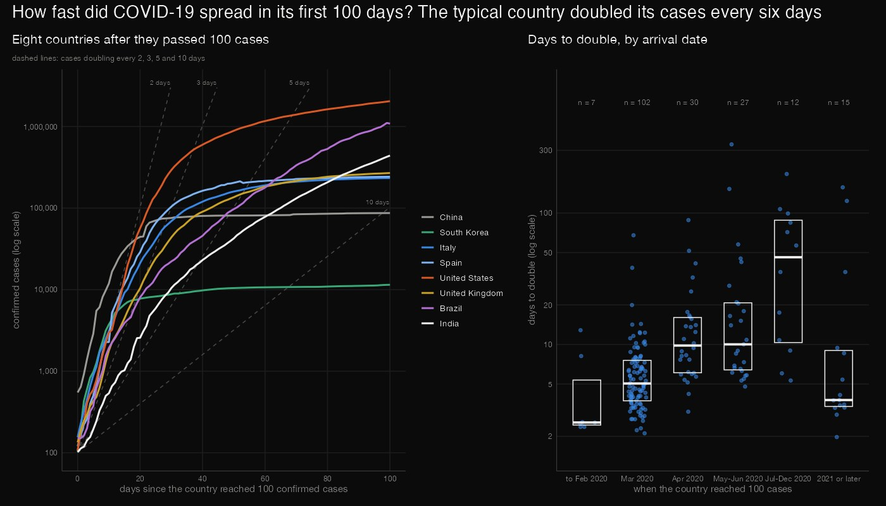
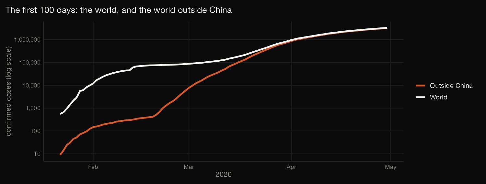
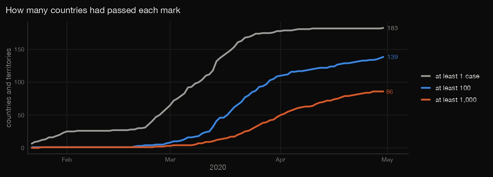
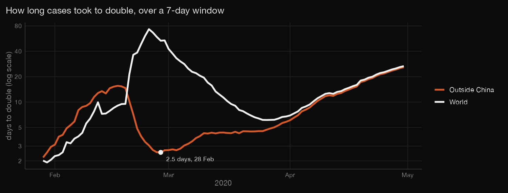
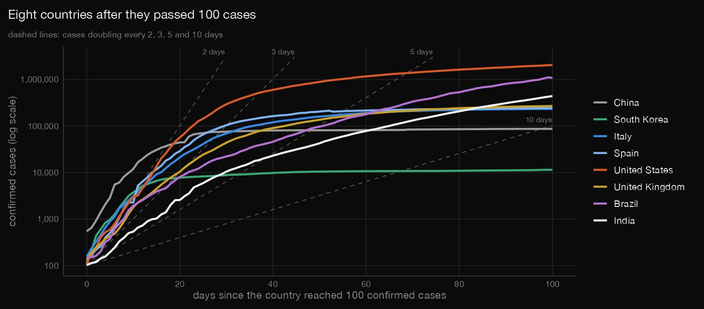
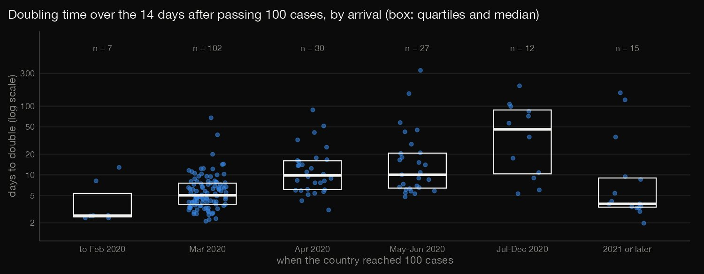

R · Data visualization · 2026-10
How Fast Did COVID-19 Spread in Its First 100 Days?
Johns Hopkins' confirmed cases from 22 January to 30 April 2020: the world reached 3.28 million, 97% of it outside China; outside China cases doubled every 2.5 days at the fastest, the typical country doubled in 6.3 days after passing 100 cases, and countries that arrived later grew more slowly.

Confirmed cases are not infections: they depend on testing, case definitions and how fast countries reported, so a doubling of confirmed cases in March 2020 partly records testing catching up. Later arrivals growing more slowly is a description, not a cause; the late groups are small. China was already above 100 cases when the record starts, and cumulative counts include revisions (171 falls) that are left as published. The 14-day window and the 100-case start are my choices.
01 — The problem
On 22 January 2020 Johns Hopkins University began counting confirmed COVID-19 cases country by country. How big did the count get in 100 days, how fast was it doubling, and did every country follow the same curve?
The questions follow DataCamp's "Visualizing COVID-19" (R, ggplot, logarithmic scales): the same Johns Hopkins data, with the analysis and the charts written in R. The data is real, not a course file.
02 — What I built
One file, 197 countries and territories, audited and analysed in R:
- Audit: provinces into countries, four rows that are not countries, and every day a cumulative count fell.
- The world in 100 days: cases, doubling time over 7 days, and the world outside China.
- Each country after 100 cases: a straight line through the logarithm for 14 days, then the doubling time and how it depends on arrival date.
- Check:
check.pyrecomputes 9,758 numbers in plain Python from the raw file.
03 — How it was built
- 01
Download the confirmed-cases file
The Johns Hopkins CSSE global confirmed-cases file (CC BY 4.0): one row per country or province, one column per day from 22 January 2020 to 9 March 2023, cumulative. JHU stopped collecting on 10 March 2023. It is 1.8 MB, so it is committed with its checksum.
download.file(url, dest, mode = "wb", quiet = TRUE) - 02
Audit before analysing
289 rows become 197 countries and territories once provinces are summed and four non-countries (two cruise ships and two Olympic Games) are left out. No values are missing, but the cumulative count falls on 171 country-days in 84 countries, by as much as 348,840 for France on 20 May 2021, and China's count jumps by 15,136 on 13 February 2020. All are left as published.
by_country <- long |> group_by(country = `Country/Region`, date) |> summarise(cum = sum(cum), .groups = "drop") - 03
The world in its first 100 days
The world's cumulative cases and its doubling time over a 7-day window, 7 ln 2 divided by ln of today's count over the count a week ago, for all countries and for all but China, which dominated the count until March. For the world outside China the fastest window counts only if it ends with 1,000 cases or more; the answer is the same for any threshold from 100 to 3,000.
fast <- world |> filter(day >= 8, day <= 100) |> slice_min(doubling7, n = 1, with_ties = FALSE) - 04
How far it had spread
On each of the first 100 days, how many countries had passed 1, 100 and 1,000 cases.
- 05
Each country after 100 cases
Day 0 is the first day a country's count reached 100. Over the next 14 days, a straight line through the logarithm of the count gives the growth rate, ln 2 divided by its slope is the doubling time, and the R² says how straight the line is. Countries are grouped by when they reached 100, and a Spearman correlation compares arrival date with doubling time.
v <- g$cum[i0:(i0 + 14)]; x <- 0:14; fit <- lm(log(v) ~ x); b <- unname(coef(fit)[2]); at <- function(k) if (i0 + k <= nrow(g)) g$cum[i0 + k] else NA_real_ - 06
Recompute it by hand
check.pyrecomputes 9,758 numbers in plain Python from the raw CSV, with no R, pandas or numpy: the audit, every day of the world and of the world outside China, the spread, every country's day 0 and regression (slope, R², doubling time), the medians and quartiles, and a Spearman correlation with tied ranks averaged.y = [math.log(s[i0 + j]) for j in range(15)]; x = list(range(15)); mx, my = 7.0, sum(y) / 15
04 — Results

The first 100 days. The record starts at 557 cases on 22 January 2020 and reaches 3,281,366 on day 100, 30 April 2020. Outside China the count was 3,194,538 on that day: 0.5% of the world's cases on day 25 (15 February), 35.7% on day 50 (11 March) and 97.4% on day 100. Countries with at least one case: 6 on day 1, 27 on day 25, 110 on day 50, 180 on day 75 and 183 on day 100; with at least 100 cases: 1, 1, 24, 116 and 139; with at least 1,000: 0, 1, 9, 59 and 86.


| Day | Date | Cases | Doubling |
|---|---|---|---|
| 38 | 28 Feb | 4,519 | 2.5 |
| 50 | 11 Mar | 44,900 | 4.2 |
| 60 | 21 Mar | 222,927 | 4.5 |
| 70 | 31 Mar | 784,871 | 5.8 |
| 80 | 10 Apr | 1,567,829 | 11.7 |
| 90 | 20 Apr | 2,408,783 | 17.8 |
| 100 | 30 Apr | 3,194,538 | 25.9 |
How fast it was doubling. Doubling time over a 7-day window for the world outside China; "cases" is the count that day. The world's fastest window, 1.92 days on 30 January, is China catching up its counts. Outside China, among windows with at least 1,000 cases, the fastest was 2.53 days on 28 February with 4,519 cases; the answer is the same for any threshold from 100 to 3,000 cases, and 2.68 days at 5,000 or 10,000. After that it slowed: 4.2 days on 11 March, 5.8 on 31 March, 11.7 on 10 April and 25.9 on 30 April.

A typical country. In the 14 days after passing 100 cases the median country's count doubled in 6.30 days (quartiles 4.06 and 10.84); one country did not grow at all. The median R² of the straight line through the logarithm is 0.96, and 56.2% of countries have an R² above 0.95, so growth was close to exponential for many but not all. The fastest were the Marshall Islands (1.97 days, in August 2022, R² 0.89), Spain (2.11), Turkey (2.23), the United States (2.30) and Iran (2.36); the slowest the Bahamas (332.9), Barbados (198.2), Dominica (156.8), Monaco (152.5) and Timor-Leste (123.6).

| Arrived | n | Median | Quartiles |
|---|---|---|---|
| to Feb 2020 | 7 | 2.5 | 2.4–5.4 |
| Mar 2020 | 102 | 5.0 | 3.7–7.6 |
| Apr 2020 | 30 | 9.8 | 6.1–16.0 |
| May–Jun 2020 | 27 | 10.0 | 6.4–20.7 |
| Jul–Dec 2020 | 12 | 46.1 | 10.3–88.2 |
| 2021 or later | 15 | 3.8 | 3.4–9.0 |
Later arrivals grew more slowly. The table gives days to double over the 14 days after reaching 100 cases, by when a country got there (n is the number of countries). Across the 193 countries with growth, the Spearman correlation between arrival date and doubling time is 0.50 (p = 1.3e−13). The late groups are small, and the 15 countries of 2021 or later doubled faster again.
Data quirks. The cumulative count falls on 171 country-days in 84 countries: France on 20 May 2021 (−348,840), Spain on 2 March 2021 (−74,347), Peru on 25 December 2022 (−65,286), Kazakhstan on 24 July 2021 (−59,375) and France on 4 November 2020 (−46,121). China's count jumps by 15,136 on 13 February 2020, then 6,463 the next day. All are left as published.
05 — What I'd do next
- Add deaths, which depend less on testing than confirmed cases, and compare their doubling times with those of cases.
- Bring in population (the same Johns Hopkins repository has it) to compare cases per 100,000 at the same age of each epidemic.
- Try other windows and fits, to see how much the median doubling time and the arrival-date pattern depend on the 14-day window.